Tap a sticky note to see what I use each tool for.
pick a note!
Curious first, designer second
I enjoy observing everyday moments, spotting the hidden problems in them, and sketching my way to user-centred solutions.
I'm talkative in critiques, happiest with something to build, and always up for coffee and carbs. I also draw digital illustrations, which keeps my product work expressive.
A compact dual-stage chopper that cuts vegetables into segments before they ever reach the blades.
TypeProduct design
ToolsFusion 360
Outcome3D print
The problem
Chopper users still have to pre-cut vegetables first, which means extra tools and a slow, messy prep. A chopper should save time, but the prep work around it often cancels that out.
Process
Problem statement and design brief. Defining what to fix and what a good solution must do.
The pre-cutting ring idea. A ring cutter that segments the vegetable first, so it can go straight into the chopper.
Exploration. Sketching and testing ways to make the idea work in a compact product.
Fusion 360 modelling. Modelling the cutting mechanism and checking how the parts fit together.
Final renders and 3D print. Presenting the final form and 3D printing the prototype.
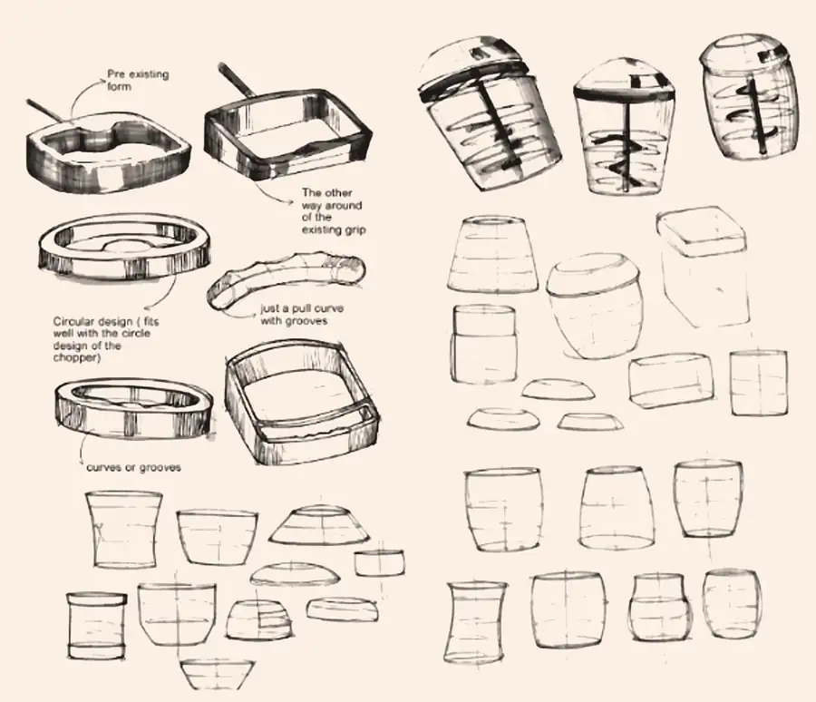
Early sketchbook exploration: grip and ring options for the cutter, and container and lid forms.
Modelling the cutting ring
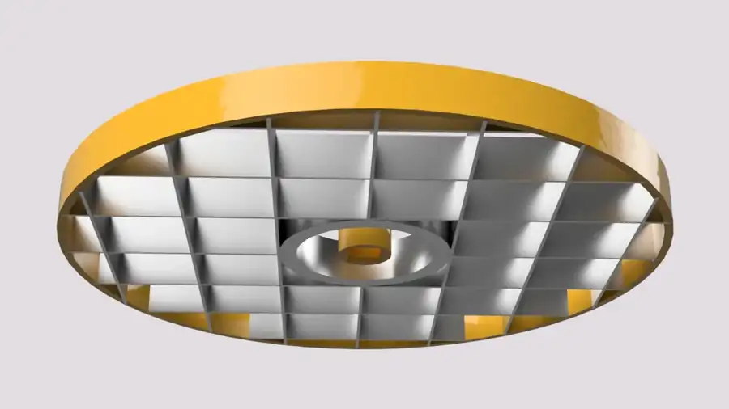
Cutting ring, seen from below.
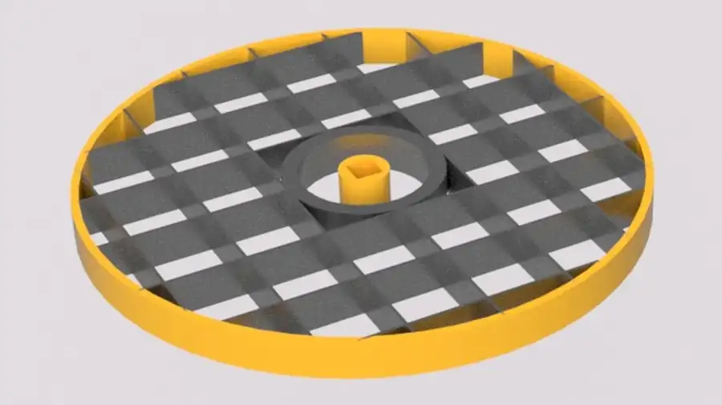
Cutting ring, angled view.
Putting it together in Fusion 360
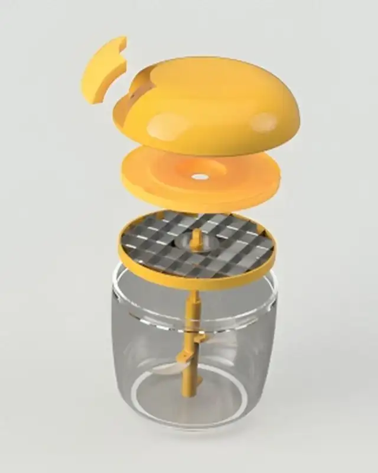
Exploded view.
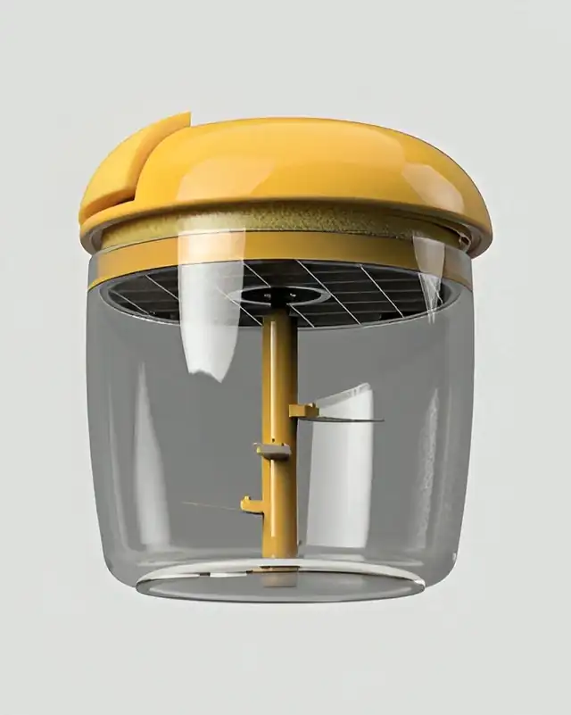
Assembled.
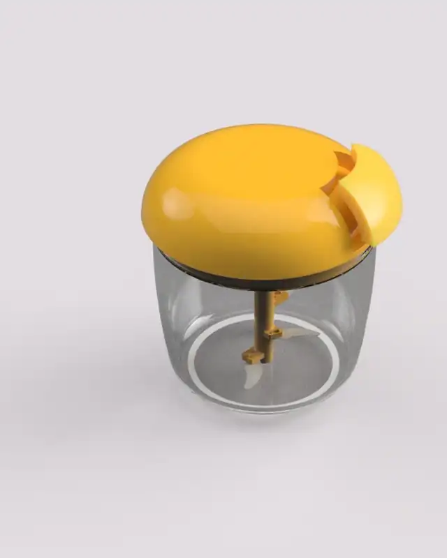
Assembled, from above.
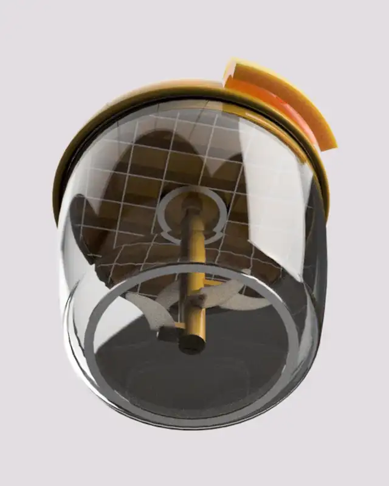
Another angle inside.
The result
A compact dual-stage chopper: press the lid and the ring cutter segments the vegetable before it meets the rotating blades. One motion, no separate pre-cutting step.
It started with a favourite character: Stitch, who is curious, bold, loud and always on the run. What inspired me wasn’t the character as a whole, but how he changes for the people he loves, his ohana. Water, with its fluid and unpredictable nature, became the way to express him in form.
The finalised concept
Inspired by water and its fluid, unpredictable nature, the design reflects Stitch’s wild yet comforting personality. The portable speaker becomes the wanderer, moving freely like Stitch, while the vinyl player becomes his home. When the speaker returns to its dock, it amplifies the vinyl, bringing both elements together, just like Stitch returning to his ohana, Lilo and Nani.
The crux of the product
BLUU 626 is one story told by two objects: a portable speaker and a vinyl player that belong together.
The wandererThe portable speaker moves freely and goes where you go, like Stitch.
The homeThe vinyl player is where the speaker belongs, a resting place it returns to.
Coming homeWhen the speaker returns to its dock, it amplifies the vinyl, and the two become one.
WaterFluid, unpredictable and comforting, it shapes the flowing curve that joins both parts.
The model process
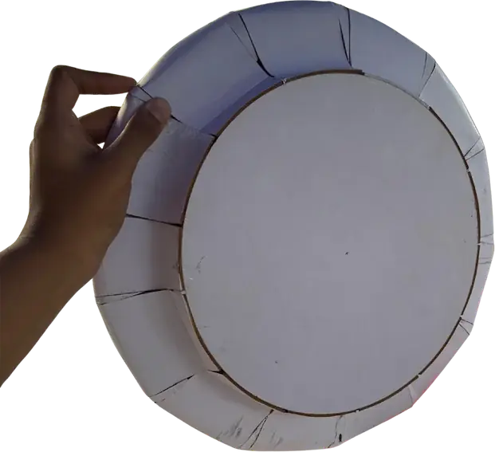
1The process involved a lot of PVC manipulation at its best. It started with creating the vinyl area and securing the bends using 2 mm PVC, gradually shaping the material into the desired form.
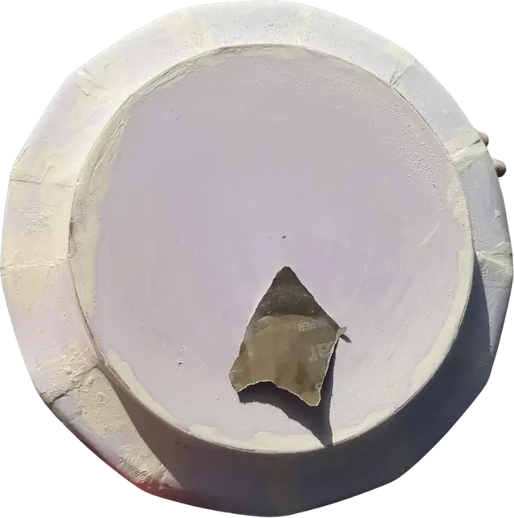
2It genuinely involved a lot of scrubbing, to the point I literally scrubbed my soul out.
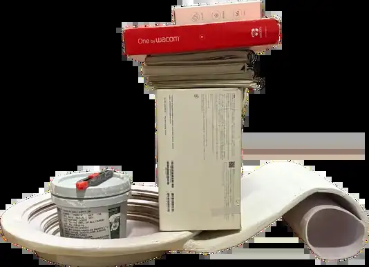
3Getting the curves right meant putting the PVC under a lot of weight and letting it sit for hours.
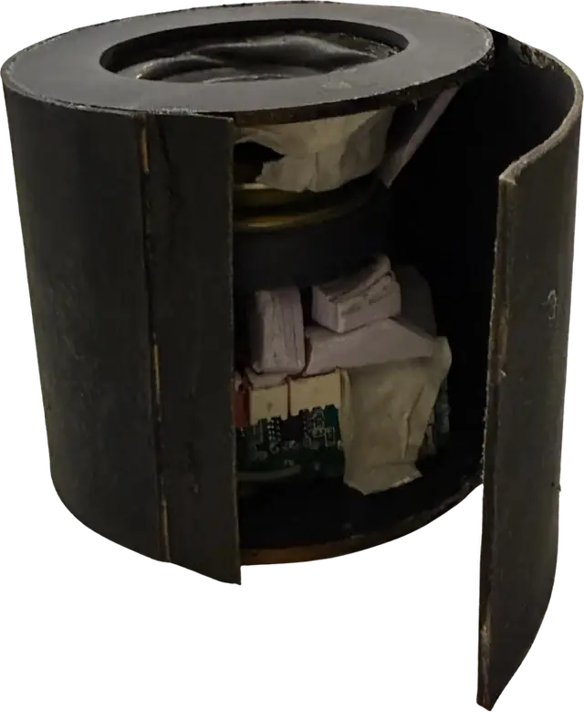
4Started working on the speaker’s internal part and somehow ended up soldering three times because the connection kept breaking.
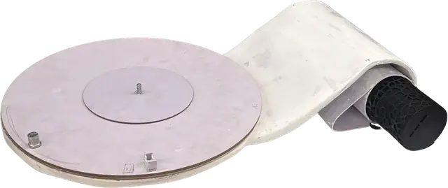
5Finally gave the vinyl a resting place by adding the small disk turntable, and also gave the speaker its spot.
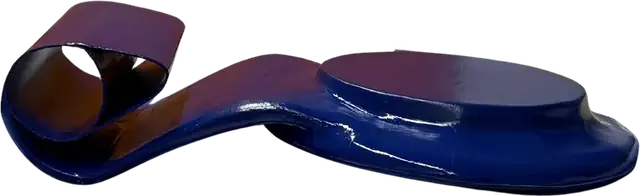
6Ended by spray painting every speck of that model and adding a layer of varnish on it.
CMF
Made from PVC, acrylic wall putty, spray paint and a little bit of paper. Colour being blue and black.
Digital renders
Final renders made in SolidWorks and rendered in Fusion 360.
A hybrid board game inspired by everyday Indian chaos, social interactions and unexpected situations.
TypeBoard game
BoardSix magnetic triangles forming a hexagon
GoalReach END with the fewest steps
TechTap Station with NFC cards
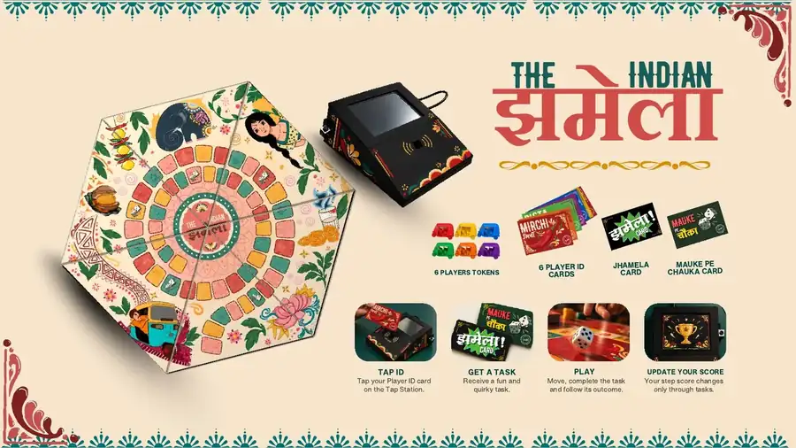
The game at a glance. Select to enlarge.
Why this topic
Board games encourage entertainment, social interaction and strategic thinking. Traditional Indian games reflect the country’s cultural heritage, but there is room to explore contemporary Indian life through play. Everyday experiences like traffic, unexpected delays and social interactions are rich inspiration for a game people can relate to.
Cultural relevanceRepresent contemporary Indian experiences through gameplay.
Social interactionEncourage face-to-face participation and shared experiences.
Experiential learningExplore how everyday situations can become playable challenges.
Game innovationCombine a physical board with a digitally supported interaction system.
The design opportunity was to move beyond using Indian culture as visual decoration and build it into the actual mechanics of the game.
The idea
The Indian Jhamela grew out of observing the everyday hustle we all go through. Rooted in personal experiences, it captures the little struggles, unexpected detours and chaotic moments of everyday Indian life. What began as an observation of our daily jhamelas became a game that brings people together through humour, relatable challenges and a little friendly competition.
Why the least amount of steps?
The core mechanic comes from our natural tendency to look for shortcuts, whether it’s a shorter route to a destination or the easiest way to get something done. In the game, players navigate chaos, make clever decisions and look for the shortest path to the end, so the player with the lowest step score wins.
The brief
Intent: to design a board game that captures the humour, unpredictability and social dynamics of everyday Indian life through physical gameplay, interactive tasks and digital interventions.
Cultural contextualisation. Translate recognisable Indian everyday experiences into gameplay.
Social engagement. Encourage direct interaction through tasks and challenges involving other players.
Meaningful mechanics. Keep tasks, scoring, chance and player intervention distinct but connected.
Physical and digital integration. Use a Tap Station and card-based inputs to trigger tasks and events.
Modularity. A hexagonal board made of six magnetically connected triangular sections.
Replayability. Variation through changing tasks, chance events and player interactions.
Usability. Rules, components and scoring that are easy to understand.
Scope
Physical product designA six-part hexagonal board, six coloured tokens, dice and a compact component system.
Gameplay and interactionTurn-based movement, task-based scoring, social challenges, Jhamela interventions and chance events.
Digital integrationA shared Tap Station that identifies players and triggers tasks or chance events through physical ID and event cards.
DocumentationGame rules, instructions, component identification and a clear explanation of gameplay.
The Tap Station, the main brain
The Tap Station went through many iterations of geometry, screen orientation, surface inclination and component placement. The goal was to bring the screen, the tap area and the physical switch into one working housing. Through refinement, bulky forms, unnecessary structural complexity and cluttered layouts were removed, leaving a compact and organised design.
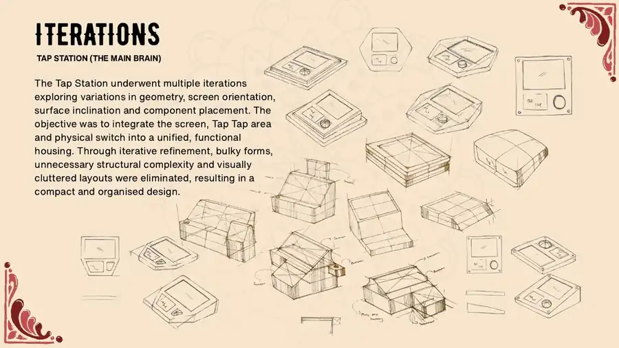
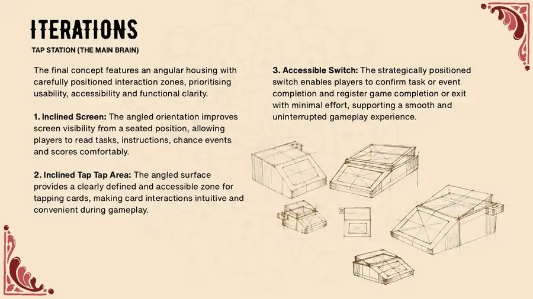
The final concept is an angular housing with carefully placed interaction zones, put together for usability, accessibility and clarity.
Inclined screenThe angle makes the screen easy to read from a seated position, for tasks, instructions, chance events and scores.
Inclined tap areaAn angled, clearly defined zone that makes tapping cards intuitive and comfortable.
Accessible switchPlayers confirm a task or event, or end the game, with minimal effort and no interruption.
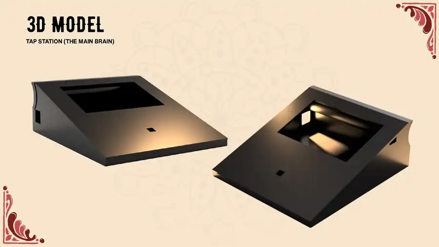
3D model of the Tap Station.
Tap cards and board
The tap cards and board illustrations take inspiration from Indian culture, traditional aesthetics and everyday desi experiences. Each illustration is hand-drawn and then digitised, keeping the charm of organic artwork while staying visually consistent. The blend of traditional influences and contemporary design gives the game a vibrant, playful and distinctly Indian identity.
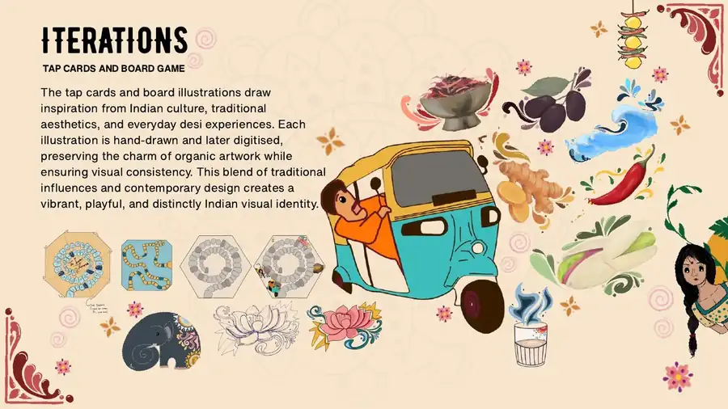
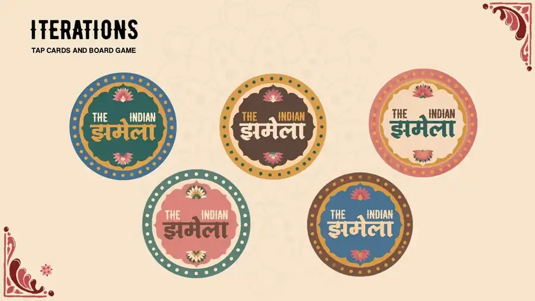
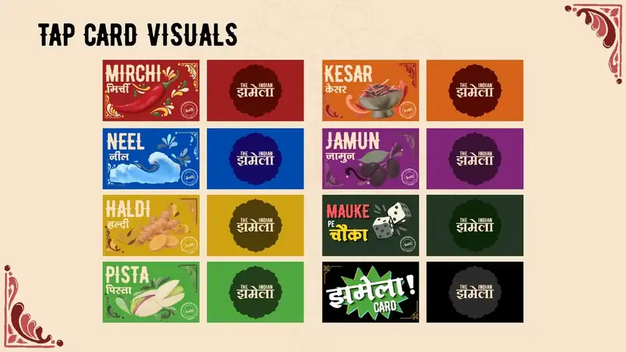
How to play
Objective: reach END with the lowest final step score.
Set up. Join the six magnetic triangles into the hexagonal board. Each player picks a coloured token and its matching Player ID Card, and everyone starts at START. The highest dice roll goes first, and play moves clockwise.
Roll the dice. Move your token forward by the number rolled.
Tap your ID. Tap your Player ID Card on the Tap Station to receive your task.
Perform the task. Do the action shown on the screen.
Register completion. Single-press the switch to confirm the task or event, then the next player goes.
Scoring rule: the dice decide where you are on the board but never change your step score. Only task outcomes do. A forward task adds the steps shown, a backward task subtracts them, and some tasks leave the score as it is.
Jhamela cardEach player gets 4 uses per game, tracked digitally. Tap your ID, the Jhamela card, then the target player’s ID, and that player performs the task. It can’t be used on challenge tasks.
Mauke Pe ChaukaWhen you land on a Chance space, tap your ID and then the Mauke Pe Chauka card, do the event on the screen and press the switch.
Challenge tasksRock, paper, scissors, thumb fights, memory games and staring contests can’t be passed on with the Jhamela card.
WinningWhen you reach END, long-press the switch. The Tap Station then shows the final scores, and the lowest step score wins. Dice are position, tasks are score.
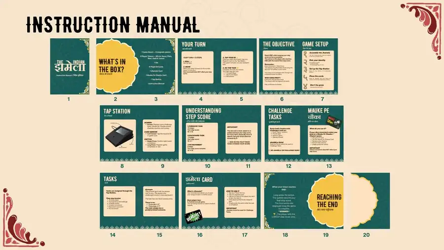
The instruction manual.
Inside the Tap Station
An ESP32-based board with an integrated 3.5-inch TFT display runs the game. An NFC module (PN532) reads the cards so the system can identify players and trigger the programmed actions. A push button gives two inputs: a short press for DONE and a long press for EXIT. USB-C provides power and programming.
The game logic is written in C++ with the Arduino framework. It reads card IDs, identifies players, applies the task and movement rules, updates scores and refreshes the screen, while the main loop keeps checking inputs and the current game state.
A social finance app for Gen Z, flatmates and travellers that combines pre-budgeting, real-time finance tracking, AI receipt scanning and smart expense splitting into a simple, transparent visual experience.
TypeUI / UX design, social finance app
ToolsFigma, Claude
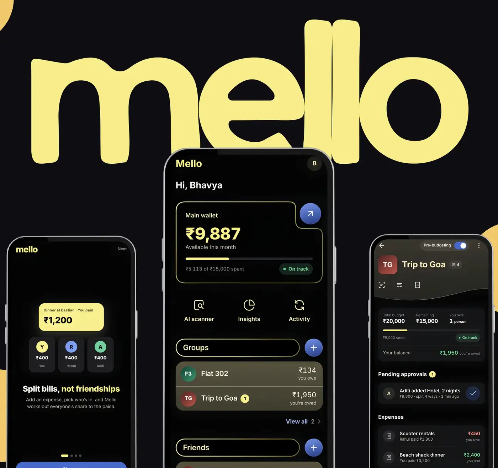
Context: shared money is planned too late
The problemSplitting apps only help after the money is spent. Entry is manual, trips get confusing, and personal budgets never connect to shared spending.
The ideaPlan a budget before the trip, track it live, scan receipts with AI, and see who owes what without awkward reminders.
Who it’s forCollege students, flatmates and travellers, like our personas Priya, Rohan and Aarav.
From our survey of 71 people
52%said they’d love pre-budgeting a trip or outing
54%would scan a bill and let AI find each item
55%had already used Splitwise, so the habit exists
Domains
I want to…
Group travel…plan a trip budget with friends before anyone spends.
Shared living…split rent and bills with flatmates without awkward reminders.
Personal finance…see my own spending and my share of group spending in one place.
Receipts and AI…snap a bill and split it by item instead of typing it all in.
Moodboard
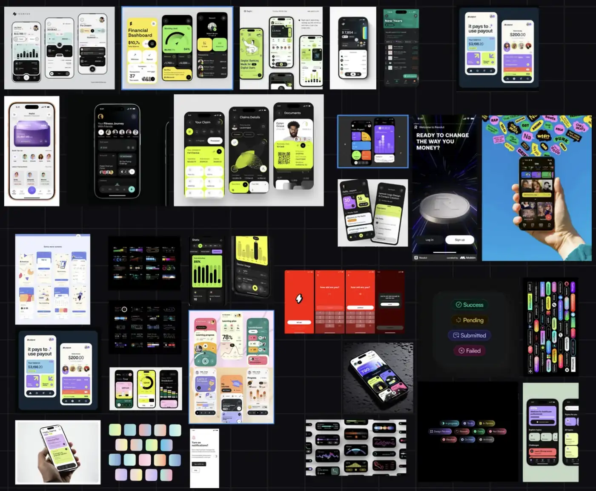
Mello’s mood
Night#0A0A0D
Cream#FBECC1
Mello yellow#F8ED8A
Action blue#4766CF
Positive#71D19B
Calm, not alarmingNo flashing red: soft colours say how you’re doing.
Friendly and roundRounded type, pills and soft cards.
Money you can seeBig amounts, bars and donuts over tables.
User flow: sign-up, shorter, clearer, skippable
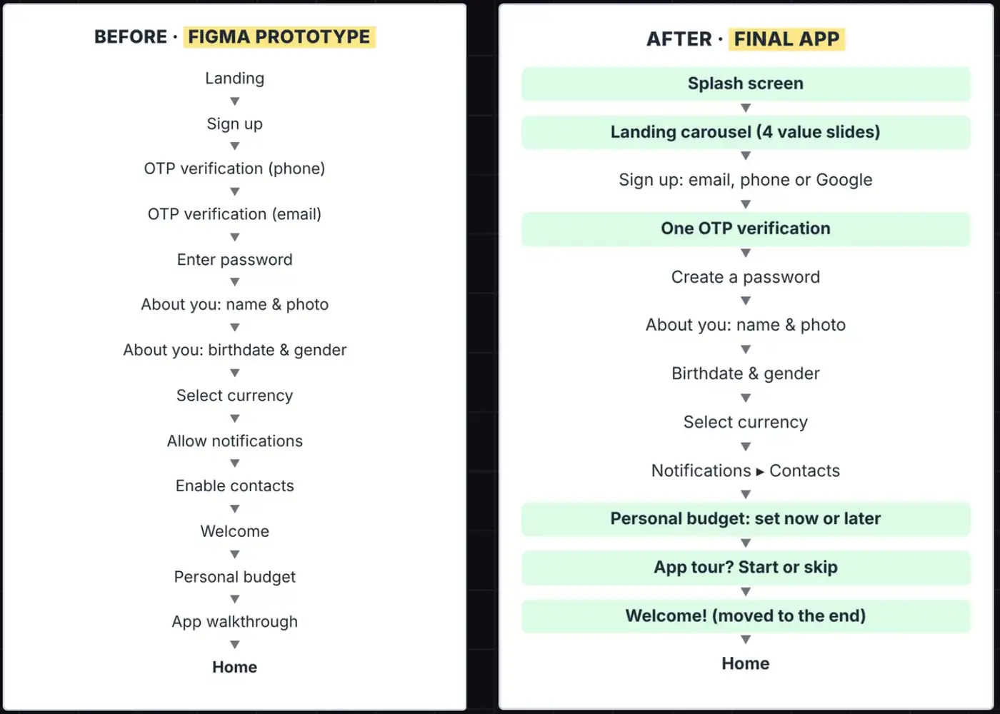
Before: the Figma prototype. After: the final app.
Added a splash and a 4-slide carousel that explains the app.
Merged two OTP screens (phone, email) into one.
Made optional: budget (“Set up later”) and app tour (“Skip”).
Moved “Welcome!” to the end, when setup is really done.
Added forgot password: OTP, then a new password.
Wireframes
Sign up and onboarding (1 of 2)
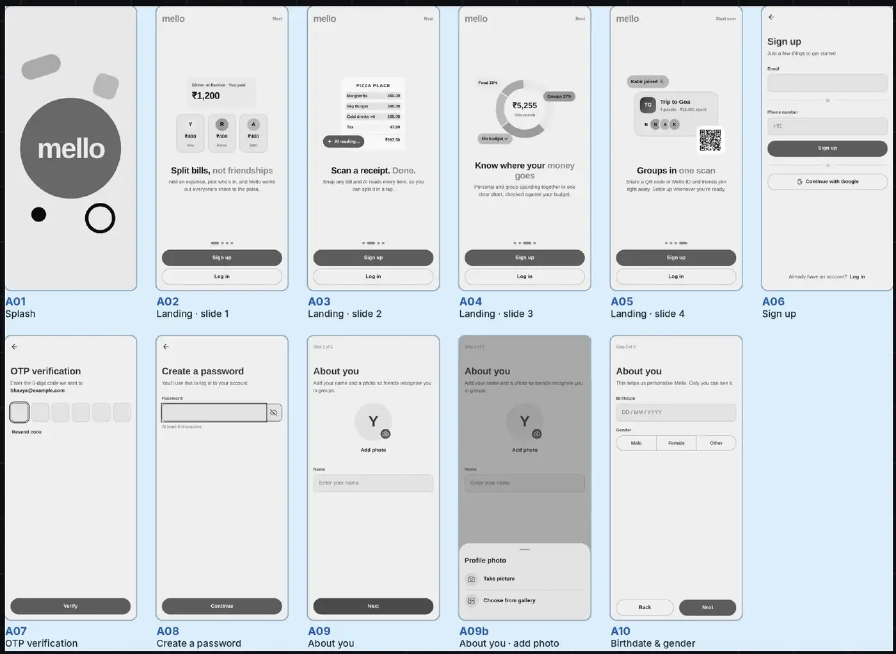
Splash opens on its own after a second. Landing has 4 slides, then Sign up or Log in. Sign up → OTP → Create a password → About you. “Add photo” opens a sheet: take a picture or choose from the gallery.
Sign up and onboarding (2 of 2)
Currency → Notifications → Contacts (Allow or Not now). Personal budget: Get started sets it now, Set up later skips. App tour? Start tour shows 4 screens; Skip goes to Welcome. “Go to home” finishes setup.
Log in, home and wallet
Log in → Welcome back → Home. Forgot password → OTP → New password. Home opens the wallet, insights, activity, friends and Add expense.
Groups
Create or join a group. The group screen opens people, approvals, settle up, QR invite, budget and edit. Add expense picks who paid and how to split.
AI scanner and profile (1 of 2)
AI scanner: take a photo or pick one → review the items, tax and total → Create expense. “Type instead” opens Add expense.
Profile: the avatar on Home opens it. From there: edit profile, my QR code, scan QR (or type an ID), friends, notifications and security.
Profile settings and receipts (2 of 2)
Settings sheets: currency, appearance, help centre, contact us and log out slide up over Profile.
Receipt generator: pick one day, or tap “Want a clubbed receipt?” to choose a start and end date → Generate → Your receipt → Save.
User flow: after sign-up, everything starts from Home
Main walletWallet card ▸ Main wallet ▸ expense details ▸ personal receipt.
Insights & ActivityInsights overview with filters · Activity sheet ▸ any expense.
AI scannerCamera ▸ review scanned receipt ▸ create expense (or type instead).
GroupsNew / join group ▸ group ▸ people, approvals, settle up, QR invite, budget, edit, receipt.
Add expensePersonal or group ▸ who paid ▸ split equally or custom ▸ AI fill-in.
Illustrations for a digital publication about warmth, wholeness and comfort food.
TypeBook illustration
FormatDigital publication
ThemeThe self and the other
StyleSoft pastel, painterly
About the project
These illustrations were created for the digital publication Half the Bowl Is Mine. They explore the idea of warmth and wholeness through comfort food, linking to the theme of the self and the other. Food becomes a shared experience where the self and the other merge, creating a sense of completeness.
Visual language
Soft pastel tones and painterly textures create a warm visual language where food becomes a metaphor for the self and the other. The recurring bowl acts as a symbolic space for identity, memory, and connection, tying the illustrations together.
Welcome to my digital junkyard—a collection of my creative chaos. It's where original graphics, playful ideas, and bold visuals come together. I love creating work that's expressive, relatable, and a little unexpected—whether it's bold prints or illustrations inspired by everyday favourites, like my iconic vada pav.
EVERYTHING HAS ITS PROCESS
Sketch first. Design later. Every piece is built from original ideas, never copied. So are all these ideas .
Souvenirs for the artists of WITH Festival: a layered, hand-painted flame on a wooden base, symbolising warmth, passion and togetherness.
TypeSouvenir design
My roleConcept and design direction
Made fromLaser-cut MDF, paint, wooden base
The festival
I contributed to the Indian chapter of WITH Festival, a global celebration of art, storytelling and creative technology. Hosted at Anant National University, it brings artists, designers and Indigenous voices together through immersive projects and conversation.
The WITH 2026 poster. Its four colours and flowing forms shaped the souvenir.
The brief
As part of a team, we designed a series of souvenirs for the artists taking part in the festival. I led the early ideation and built the design framework the team worked from.
The concept
The idea revolved around fire: warmth, passion and togetherness, the spirit of WITH. The flame form reinterprets the flowing graphics of this year’s festival identity, with each layer taking one of its colours, so every souvenir carries a piece of its story. Seen from afar, the stacked forms read as one fire; the base carries the Anant and WITH logos.
Concept sketches. Every motif comes from the same storyline as the festival artwork, and the base was planned to carry Anant’s logo.Sketching with the WITH 2026 artwork open for reference.
Work and process
I led the concept development and design direction, and supported the team during assembly wherever needed. Each flame is built from laser-cut MDF layers, stacked, painted and fixed onto an engraved wooden base.
Laser-cut MDF layers, stacked before painting.The finished souvenir.
The team ;)
The final pieces were a shared effort that reflects what the festival stands for: connection, creativity and cultural exchange.
An anatomy poster you learn from by touching it. Tap a part of the heart and the screen tells you what it is and what it does.
TypeInteractive poster
ToolsMakey Makey, Scratch
Made fromLayered paper, board, wire
The finished poster, with the presentation and the Scratch code running alongside.
The idea
Anatomy is usually learnt by staring at a diagram. This project turns a human heart poster into a hands-on learning tool, so you explore its parts through touch instead of passive viewing.
Research and illustration
We started from labelled anatomy diagrams to get every chamber, valve and vessel right, then drew our own heart illustration to build the poster from.
Studying labelled heart diagrams for reference.
Tracing the illustration onto paper.Cutting the heart’s paper layers.
Building the poster
The heart is built up in layers of cut paper on a printed board. We drilled a hole at every touchpoint and ran a wire through each one, so every part of the heart could connect to the Makey Makey behind the board.
Drilling a hole at every touchpoint.
Threading the wires through each layer.All wired up.
Layering the heart, with the digital illustration as the guide.
How it works
A Makey Makey completes an electrical circuit whenever you touch a connected point, so every touchpoint acts like a key on a keyboard. We added extra input pins to fit in more interactive parts, and mapped each one to a key in Scratch that triggers its own visuals.
Wire the poster. Each part of the heart is connected to a Makey Makey input.
Touch a part. The touch closes the circuit and sends a signal to Scratch.
See it explained. Scratch shows the part’s name, its function and its role in the circulatory system.
Mapping each Makey Makey input to a part of the heart.The Scratch code behind each touchpoint.
The result
Physical touch and on-screen feedback work together, which makes the learning more engaging and makes complex anatomy easier to understand and remember.
A hand-built physical model of the Panasonic HC-X1000 professional camcorder.
TypeModel making
ObjectPanasonic HC-X1000
Made fromBoard, foam, putty, paint
Hands on
Recreating the Panasonic HC-X1000 by hand built my prototyping and craftsmanship skills. It deepened my understanding of how a product is constructed, how its form comes together and how its details work, and showed me how precise a physical model has to be to match the design.
The workbench: measured sketches, board offcuts and the first parts.
Process and final
The hands-on process taught me patience and attention to detail. It improved my understanding of product construction and pushed my prototyping skills much further.
Building it up
The lens hood was built from board with bevelled corners, the lens rings from strips of corrugated card, and the body and handle shaped in foam and smoothed with putty.
The lens hood in board.Checking the hood against the handle.
Lens rings in corrugated card, joined to the body.The top handle section, marked “front”.
Fitting the handle onto the body.Fully assembled, ready for paint.
The final model
Painted black, with every button, label and the 4K mark detailed by hand.
Side view.Another side view.
Front three-quarter view.From above: the record button and controls.